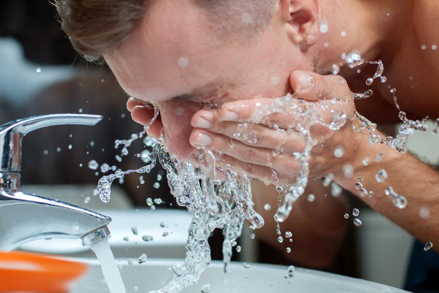

Keliru Membersihkan Muka Membuat Wajah Lebih Tua
KAHFI DIRGA CAHYA
KabarKabur.com - 25/09/2017, 17:43 WIB

Ilustrasi mencuci muka(GeorgeRudy)
kabarkabur.com - Mencuci muka, jika dilakukan dengan benar, adalah cara termudah dalam rutinitas perawatan kulit. Tapi, tahukah Anda beberapa hal yang kita lakukan saat mencuci muka ternyata keliru dan malah membuat wajah cepat tua?Berikut kesalahan mencuci wajah yang malah membuat penuaan dini.
1. Buang-buang uang membeli pembersih mahal
Jika pembersih wajah Anda harganya mahal, mungkin sebenarnya Anda sedang menggelontorkan uang di saluran pembuangan, kata Deb Jaliman, M.D, seorang dermatolog New York.
Kita tidak perlu sabun muka yang mahal karena pembersih itu hanya berada sementara waktu di kulit, dan bukan berfungsi sebagai obat. Alih-alih memilih pembersih muka yang mahal, para ahli menyarankan memakai uangnya untuk membeli produk perawatan kulit yang bisa membuat perbedaan di kulit, seperti pelembab, tabir surya, dan serum.
2. Hanya mencuci muka satu kali kali sehari
Walau Anda sudah membersihkan muka sebelum tidur, namun hanya membasuh dengan air pada pagi hari tidaklah cukup, kata Jaliman. "Pada malam hari, saat tidur, bakteri terbentuk di kulit, disertai dengan produksi minyak yang berlebih, (dan) perlu dihilangkan," katanya.
Jika pagi dan sore hari Anda tak sempat membersihkan muka, sediakanlah waktu di malam hari, tepat sebelum tidur. Sebab kulit perlu dibersihkan sebelum tidur untuk menghilangkan kotoran, minyak, dan polusi yang tertumpuk pada siang hari. Polusi, khususnya, merupakan faktor utama yang membuat kulit stres.
Penelitian menunjukkan bahwa polutan mengandung sejumlah senyawa buruk--termasuk komponen partikulat, asap rokok, dan ozon--yang menyebabkan hilangnya kolagen dan masalah pigmentasi.
3. Salah menggunakan pembersih
Jika Anda memiliki kulit berminyak atau berjerawat, cobalah menggunakan pembersih dalam bentuk gel. "Ini membersihkan dan menghilangkan minyak dengan lebih baik," kata Jessica Wu, M.D., seorang ahli kulit di Los Angeles.
Namun mereka yang memiliki kulit kering atau sensitif harus memilih pembersih yang lebih lembut untuk membantu menjaga minyak alami di kulit dan kelembaban.
4. Membersihkan dengan air panas
"Air panas mungkin terasa nyaman, tapi bisa menghilangkan kelembaban dan minyak alami, menyebabkan kulit kering, merah, dan gatal," kata David Bank, M.D. seorang ahli kulit di Mount Kisco, New York.
Lebih baik gunakan air dingin atau hangat, dan jangan lupa membilas sabun wajah sampai benar-benar besih.
5. Menggunakan scrub kasar
Kulit menegelupas beberapa kali dalam sepekan bisa menjadi pertanda baik: Sebab, ini membantu mengangkat sel kulit mati dan mempermudah penggunaan produk anti-penuaan. Tapi mengelupas terlalu sering tidak baik, jadi pilih scrub yang tepat untuk keperluan Anda.
"Butiran scrub berbentuk kasar akan menyebabkan kerusakan kulit dan menimbulkan garis, keriput, dan pori yang rusak," kata Dr. Wu.
Jika tidak menyukai scrub, maka bisa memilih toner dan pad (bantalan) dengan kandungan asam alfa-hidroksi (AHA) atau asam salisilat, karena berfungsi baik untuk kulit berminyak atau berjerawat.
6. Menggunakan sikat pembersih setiap hari
Memang benar kalau menggunakan sikat muka dapat membersihkan kulit lebih baik dibandingkan hanya dengan tangan. Tapi, jika kulit terlalu kering, sensitif, atau rentan memerah, alat ini dianjurkan tidak digunakan setiap saat, khususnya jika mengandung bahan seperti retinoid atau AHA.
"Terlalu banyak pengelupasan kulit bisa menciptakan peradangan, yang pada akhirnya kulit bertambah tua," kata Bank.
Penulis :Kahfi Dirga Cahya
Editor : Wisnubrata
sumber : meanshealth